Staring at all of the projects happening at The Factory
I I wanted to take a break from the entertainment world and focus more on personal projects. I left LA and linked up with my sister who was finishing up pharmacy school. We started working on a few healthcare apps and got the idea to start a factory. The main goal would be to work on designing and building projects that would have a positive impact on the world. We started with concepts to better diagnose people when they were sick, check insurance formularies, and calculate prescription dosing. Then we expanded to more sustainability projects. I built a collaboration platform that similar to the one used at Red Bull where I could invite my friends to collaborate on different ideas. This site is originally where the concept for PerDiem was born.
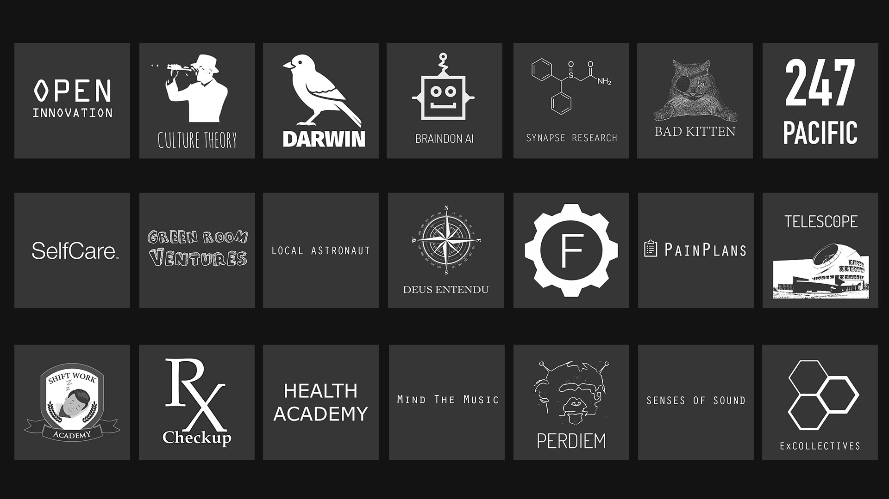
Logo designs for different Factory projects
I would post different ideas and friends would leave feedback on them. We hosted all of our projects on it and used it as our main source of online communication. It was essentially a “collective intelligence” platform for ideas. I would take this feedback and use the physical factory to bring them to life. We built a design studio that had all of the tools to build anything we could imagine. It was a creative space that inspired new ideas to come to life.
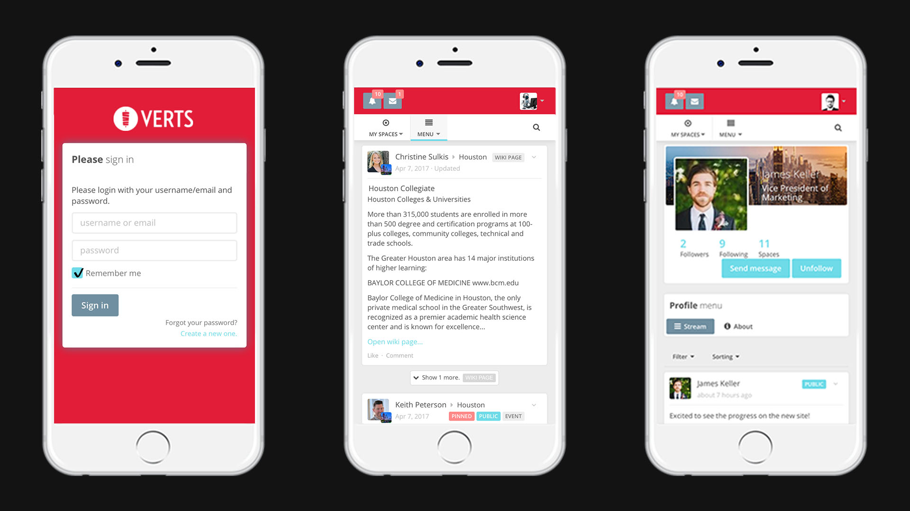
Collective intelligence platform designed for Verts field marketing program
I started moving outside of the digital design space and working on more physical systems. One of the first was designing a system to filter and recycle contaminated water for developing areas. I build a solar powered reverse osmosis recycling system. It wasn’t the most beautiful system at first, but it worked great. I was asked to give a TEDx talk in Atlanta on it.
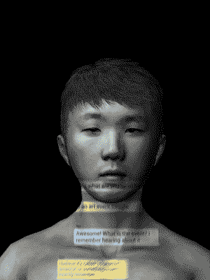
Interactive design project for San Francisco Art Instillation
I designed new models for espresso machines, 3D printed all kinds of stuff, worked on EEG systems, virtual reality, wearables, and extensive research health and fitness applications.
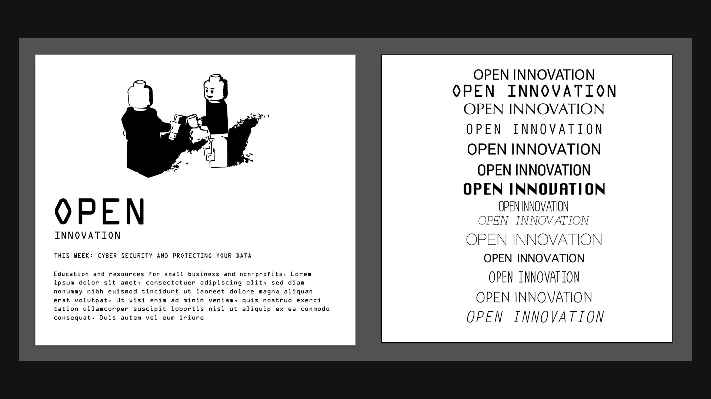
Open Innovation design and branding concepts
I also designed and built all of the furniture in the Factory. I was able to take concepts learned in designing a coffee table and apply them to designing a website. Learning that it not only has to look good, but it has to be functional as well. That every piece forms a whole to create one cohesive element. Even the smallest error would be prominently noticed by everyone. It was something that I couldn’t conceptualize until I saw it from a new perspective.
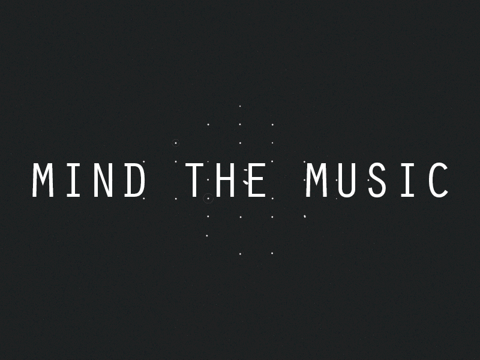
First of many Mind The Muisc graphic designs
Around the same time I left Red Bull, my two closest colleagues left as well. The one who was in charge of building the global collaborations platforms left and started working at an agency to build them for other companies. Brands like Adidas would pay over $2 million for one of these sites. My other friend (who was my boss) left for another company to build out a field marketing program similar to that at Red Bull. He needed to build one of these sites but didn’t have the budget for my other friends agency. He asked if I could make something similar and I told him I could make something even better.
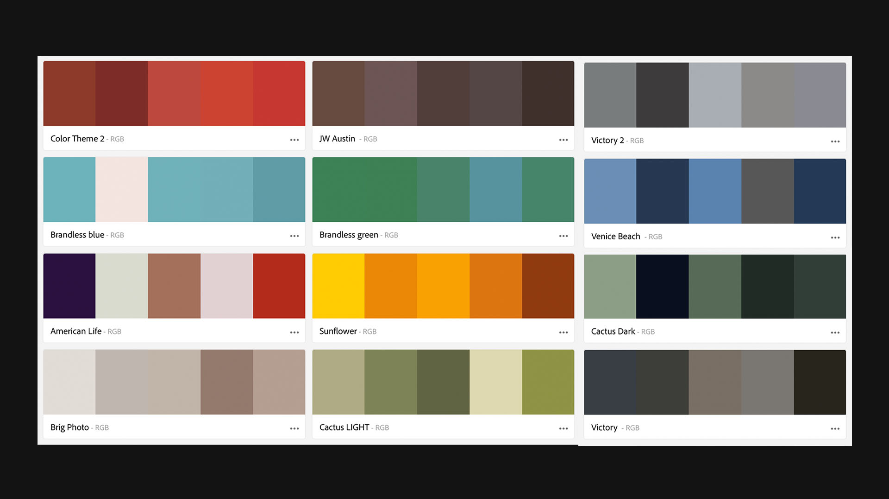
Color Schemes taken from natural enviroments (Los Angeles, Austin, New York)
So I tasked myself with designing a collective intelligence site that companies could use to collaborate. This was much different than messaging platforms like slack. It needed to be more creative, flexible, and customized for the companies specific goals. I not only had an immense amount of experience working on the platforms at Red Bull and Red Bull Records, but I had just built one for The Factory and also designed one for PerDiem. Most of the work was already done, it was just making a few adjustments to fit their specific needs.

The Factory design studio
After about month of work, I gave a demo. It was beyond their expectation. They didn’t know that most of the backend I had already completed, so the amount I was able to accomplish in the little timeframe was epic. After that, I met up with one of my old employees and we decided to start a new company around building these platforms.
Selfcare logo and iOS icon designs
T This was the first health related project I ever worked on. The original idea came from my sister when she was working Hospital rotations in pharmacy school. She told me about how most people have no idea what to do when they are sick and how great it would be to have an app that people could use to help understand what was wrong.

Screenshots of app funcitonality and UX
She started creating mockups for how it would work and I thought I could help out. I had worked on some projects in the music space that had cool ways for people to search for music. Rather than selecting from a drop down list sorted in alphabetical order, they were more emotionally driven and exciting to use.

Character development for conditions
I threw together some ideas for a new UX that was much simpler and more engaging than all the other lame healthcare apps. I created a character that would represent what the symptoms were the user was experiencing.
Icon designs
Most people didn’t necessarily need an animated version of their condition, but we found that people loved having the character. It gave the app an emotion. It was something they could relate to. People loved scrolling through the different symptoms and seeing the guy change.
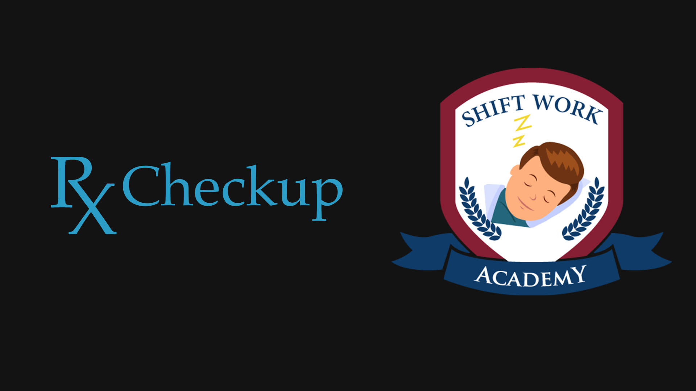
RxCheckup and Shift Work Acadey logo designs
We launched it to the App Store and started working on more apps. The next one was to check if a drug was on your formulary. We also built a dosing tool for medications. For all of these projects I needed to create all of the UI elements from scratch. It was my first time working with iOS and each button had to be custom built. I worked on icons, color pallets, and buttons. Once we put them all together it was a refreshing look to the traditionally boring healthcare design.
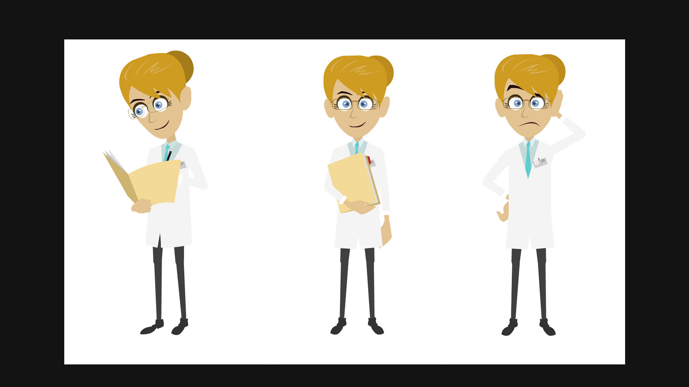
Character development for RxCheckup
In addition to the apps, I built several websites that hosted educational content for users with specific conditions. I would make engaging animations that helped people better understand their conditions and the most effective ways to treat them.

Motion graphics for Shift Work educational content
I experimented with motion graphics a lot more and found them to be a lot more exciting than static designs alone. These would all become precursors to the future company ExCollectives.
Directed by Brandon Nelson

Design of the ExCollectives website
O Originally the company was to build collective intelligence platforms. However, I had become more interested in the AI space and was working on a few side projects. One of these side projects turned out to be pretty big and an interested investor turn into a co-founder. He had some connections in the healthcare space and we started getting feedback that our product had potential. We had previously built a basic diagnosing tool, but I wanted something that was more intelligence. I started working on a system that could track the users symptoms, give recommendations, and then track which treatments were the most effective.
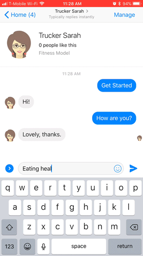
A conversation example with Sarah, the truck driving assistant
I was exploring the new messaging platforms and found they were far more effective than traditional UI elements. They could take input from users and the AI could understand the users intent rather than having a set of options for them to choose from. I could built it into an API and port it to any framework that I wanted. I was testing with Facebook, Twitter, and others.
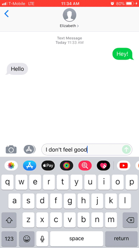
A conversation example with Eliabeth, the pain specialist, through text messaging
Then I figured out how to have Elizabeth communicate through text messaging and was ecstatic. I actually tested her by pretending that I got a new number and having my friends text with her. I could teach her to have basic conversations, but not much more at the time.

Initial UX mockups for iOS app
The next big project I had was designing a piece for an upcoming art installation in San Francisco. I knew that many people would be from the tech industry, so I really wanted my piece to stand out. I wanted to build my friend into an AI. So I designed an animated version of him and built a model around all of our conversations. The person could send text messages to the AI and it would respond with answers that were based on what it thought he might say.
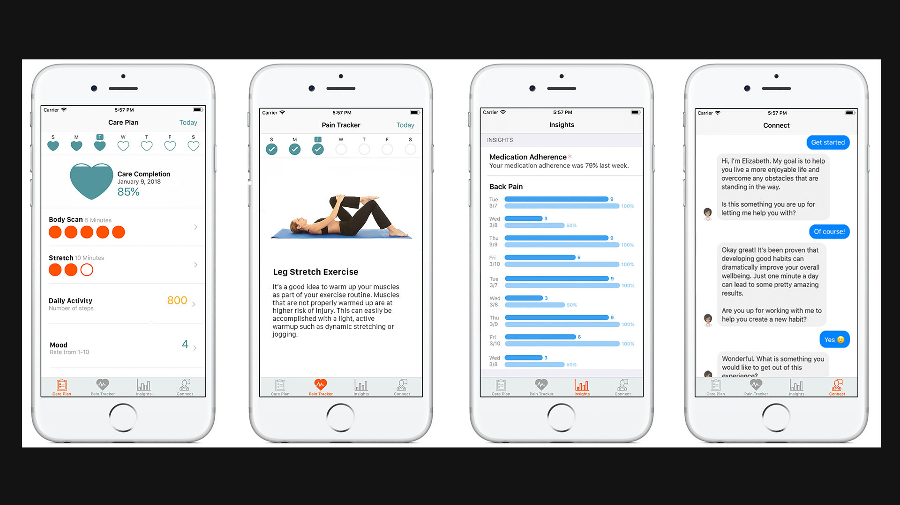
Creating "Elizabeth" the AI health assistant
The actual design of him was more challenging than the ML models. I had to get the physics perfect for movement and breathing to make it seem realistic. Engineers that worked on Siri from Apple and folks from Google and Facebook were all stoked on it. This led to transitioning out of the collective intelligence platforms to focus more on a new time of user experience.. conversational user interfaces.
Icon designs for iOS
Elizabeth started getting smarter but she was limited to conversation. The next task was developing a tracking system that could be used to understand the user behavior and find what was the most effective treatment. We worked with doctors to better understand objective metrics for tracking pain and how to develop a system that could be used with their patients.
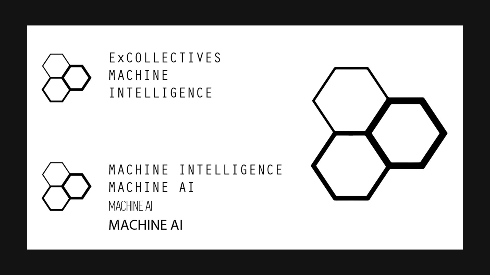
ExCollectives logo and typography concepts
One of the biggest problems doctors faced was the opioid epidemic. They didn’t have a better option to give their patients than pain killers. There was no way to track what was effective and the treatment options were different for every individual. Though this we developed “PainPlans” and started building customized plans for individuals with chronic pain. I was tasked with designing a system to track pain and provide interventions. I started by building on the HealthKit and CareKit framework for iOS. This was the most robust platform for tracking health data and simplified much of the backend development.

Painplans logo and design concepts
In addition to iOS, I needed to build a product that was cross-platform. I started working extensively with React Native to build a dynamic system that could be used on both iOS and Android. The end result was a platform that I built from scratch that could track user behavior, give dynamic recommendations, and could be use on any device.. written entirely in JavaScript.